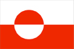
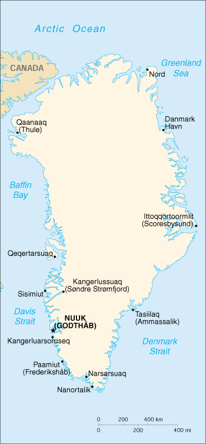

{kind=link}


| Greenland |
 |
|
|  | |
| Introduction |
Background: The world's largest island, about 84% ice-capped, Greenland was granted self-government in 1978 by the Danish parliament. The law went into effect the following year.
| Geography |
Location: Northern North America, island between the Arctic Ocean and the North Atlantic Ocean, northeast of Canada
Geographic coordinates: 72 00 N, 40 00 W
Map references: Arctic Region
Area:
total:
2,175,600 sq km
land:
2,175,600 sq km (341,700 sq km ice-free, 1,833,900 sq km ice-covered) (est.)
Area - comparative: slightly more than three times the size of Texas
Land boundaries: 0 km
Coastline: 44,087 km
Maritime claims:
exclusive fishing zone:
200 nm
territorial sea:
3 nm
Climate: arctic to subarctic; cool summers, cold winters
Terrain: flat to gradually sloping icecap covers all but a narrow, mountainous, barren, rocky coast
Elevation extremes:
lowest point:
Atlantic Ocean 0 m
highest point:
Gunnbjorn 3,700 m
Natural resources: zinc, lead, iron ore, coal, molybdenum, gold, platinum, uranium, fish, seals, whales
Land use:
arable land:
0%
permanent crops:
0%
permanent pastures:
1%
forests and woodland:
0%
other:
99% (1993 est.)
Irrigated land: NA sq km
Natural hazards: continuous permafrost over northern two-thirds of the island
Environment - current issues: protection of the arctic environment; preservation of the Inuit traditional way of life, including whaling; note - Greenland participates actively in Inuit Circumpolar Conference (ICC)
Geography - note: dominates North Atlantic Ocean between North America and Europe; sparse population confined to small settlements along coast; world's second largest ice cap
| People |
Population: 56,309 (July 2000 est.)
Age structure:
0-14 years:
27% (male 7,718; female 7,483)
15-64 years:
68% (male 20,860; female 17,272)
65 years and over:
5% (male 1,332; female 1,644) (2000 est.)
Population growth rate: 0.09% (2000 est.)
Birth rate: 16.85 births/1,000 population (2000 est.)
Death rate: 7.55 deaths/1,000 population (2000 est.)
Net migration rate: -8.38 migrant(s)/1,000 population (2000 est.)
Sex ratio:
at birth:
1 male(s)/female
under 15 years:
1.03 male(s)/female
15-64 years:
1.21 male(s)/female
65 years and over:
0.81 male(s)/female
total population:
1.13 male(s)/female (2000 est.)
Infant mortality rate: 18.26 deaths/1,000 live births (2000 est.)
Life expectancy at birth:
total population:
68.07 years
male:
64.52 years
female:
71.69 years (2000 est.)
Total fertility rate: 2.45 children born/woman (2000 est.)
Nationality:
noun:
Greenlander(s)
adjective:
Greenlandic
Ethnic groups: Greenlander 87% (Inuit and Greenland-born whites), Danish and others 13%
Religions: Evangelical Lutheran
Languages: Greenlandic (East Inuit), Danish, English
Literacy:
definition:
NA
total population:
NA%
male:
NA%
female:
NA%
note:
similar to Denmark proper
| Government |
Country name:
conventional long form:
none
conventional short form:
Greenland
local long form:
none
local short form:
Kalaallit Nunaat
Data code: GL
Dependency status: part of the Kingdom of Denmark; self-governing overseas administrative division of Denmark since 1979
Government type: parliamentary democracy within a constitutional monarchy
Capital: Nuuk (Godthab)
Administrative divisions: 3 districts (landsdele); Avannaa (Nordgronland), Tunu (Ostgronland), Kitaa (Vestgronland)
Independence: none (part of the Kingdom of Denmark; self-governing overseas administrative division of Denmark since 1979)
National holiday: Birthday of the Queen, 16 April (1940)
Constitution: 5 June 1953 (Danish constitution)
Legal system: Danish
Suffrage: 18 years of age; universal
Executive branch:
chief of state:
Queen MARGRETHE II of Denmark (since 14 January 1972), represented by High Commissioner Gunnar MARTENS (since NA 1995)
head of government:
Prime Minister Jonathan MOTZFELDT (since NA September 1997)
cabinet:
Landsstyre is formed from the Parliament on the basis of the strength of parties
elections:
the monarch is hereditary; high commissioner appointed by the monarch; prime minister is elected by Parliament (usually the leader of the majority party); election last held 11 March 1999 (next to be held NA 2003)
election results:
Jonathan MOTZFELDT reelected prime minister, receiving 23 out of 31 votes
note:
government coalition - Siumut and Atassut
Legislative branch:
unicameral Parliament or Landsting (31 seats; members are elected by popular vote on the basis of proportional representation to serve four-year terms)
elections:
last held on 17 February 1999 (next to be held by NA 2003)
election results:
percent of vote by party - Siumut 35.2%, Inuit Ataqatigiit 22%, Atassut Party 25.2%, Candidate's League 12.3%; seats by party - Siumut 11, Atassut Party 8, Inuit Ataqatigiit 7, Candidate's League 4, independent 1
note:
two representatives were elected to the Danish Parliament or Folketing on NA March 1998 (next to be held by NA 2002); percent of vote by party - Siumut 35.6%, Atassut 35.2%; seats by party - Siumut 1, Atassut 1; Greenlandic representatives are affiliated with Danish political parties
Judicial branch: High Court or Landsret
Political parties and leaders: Akulliit Party [Bjarne KREUTZMANN]; Atassut Party (Solidarity, a conservative party that favors continuing close relations with Denmark) [Daniel SKIFTE]; Candidate's League [leader NA]; Inuit Ataqatigiit or IA (Eskimo Brotherhood, a Marxist-Leninist party that favors complete independence from Denmark rather than home rule) [Josef MOTZFELDT]; Issituup (Polar Party) [Nicolai HEINRICH]; Siumut (Forward Party, a moderate socialist party that advocates more distinct Greenlandic identity and greater autonomy from Denmark) [Lars Emil JOHANSEN, chairman]
International organization participation: NC, NIB
Diplomatic representation in the US: none (self-governing overseas administrative division of Denmark)
Diplomatic representation from the US: none (self-governing overseas administrative division of Denmark)
Flag description: two equal horizontal bands of white (top) and red with a large disk slightly to the hoist side of center - the top half of the disk is red, the bottom half is white
| Economy |
Economy - overview: Greenland suffered negative economic growth in the early 1990s, but since 1993 the economy has improved. The Greenland Home Rule Government (GHRG) has pursued a tight fiscal policy since the late 1980s which has helped create surpluses in the public budget and low inflation. Since 1990, Greenland has registered a foreign trade deficit following the closure of the last remaining lead and zinc mine in 1990. Greenland today is critically dependent on fishing and fish exports; the shrimp fishery is by far the largest income earner. Despite resumption of several interesting hydrocarbon and minerals exploration activities, it will take several years before production can materialize. Tourism is the only sector offering any near-term potential and even this is limited due to a short season and high costs. The public sector, including publicly owned enterprises and the municipalities, plays the dominant role in Greenland's economy. About half the government revenues come from grants from the Danish Government, an important supplement of GDP.
GDP: purchasing power parity - $945 million (1997 est.)
GDP - real growth rate: 0.6% (1997 est.)
GDP - per capita: purchasing power parity - $16,100 (1997 est.)
GDP - composition by sector:
agriculture:
NA%
industry:
NA%
services:
NA%
Population below poverty line: NA%
Household income or consumption by percentage share:
lowest 10%:
NA%
highest 10%:
NA%
Inflation rate (consumer prices): 1.2% (1998 est.)
Labor force: 24,500 (1995 est.)
Unemployment rate: 10.5% (1995 est.)
Budget:
revenues:
$706 million
expenditures:
$697 million, including capital expenditures of $NA (1995)
Industries: fish processing (mainly shrimp), handicrafts, furs, small shipyards
Industrial production growth rate: NA%
Electricity - production: 245 million kWh (1998)
Electricity - production by source:
fossil fuel:
100%
hydro:
0%
nuclear:
0%
other:
0% (1998)
Electricity - consumption: 228 million kWh (1998)
Electricity - exports: 0 kWh (1998)
Electricity - imports: 0 kWh (1998)
Agriculture - products: forage crops, garden vegetables; sheep, reindeer; fish
Exports: $363.4 million (f.o.b., 1995)
Exports - commodities: fish and fish products 95%
Exports - partners: Denmark 89%, Japan 5%, UK 5%
Imports: $421 million (c.i.f., 1995)
Imports - commodities: machinery and transport equipment, manufactured goods, food and live animals, petroleum products
Imports - partners: Denmark 7.5%, Iceland 3.8%, Japan 3.3%, Norway 3.1%, US 2.4%, Germany 2.4%, Sweden 1.8%
Debt - external: $243 million (1995)
Economic aid - recipient: $427 million (annual subsidy from Denmark) (1995)
Currency: 1 Danish krone (DKr) = 100 oere
Exchange rates: Danish kroner (DKr) per US$1 - 7.336 (January 2000), 6.976 (1999), 6.701 (1998), 6.604 (1997), 5.799 (1996), 5.602 (1995)
Fiscal year: calendar year
| Communications |
Telephones - main lines in use: 20,000 (1995)
Telephones - mobile cellular: 2,308 (1995)
Telephone system:
adequate domestic and international service provided by cables and microwave radio relay; totally digitalized in 1995
domestic:
microwave radio relay
international:
2 coaxial submarine cables; satellite earth station - 1 Intelsat (Atlantic Ocean)
Radio broadcast stations: AM 5, FM 12, shortwave 0 (1998)
Radios: 27,000 (1997)
Television broadcast stations: 1 publicly-owned station, some local low-power stations, and three AFRTS (US Air Force) stations (1997)
Televisions: 22,000 (1997)
Internet Service Providers (ISPs): 1 (1999)
| Transportation |
Railways: 0 km
Highways:
total:
150 km
paved:
60 km
unpaved:
90 km
Ports and harbors: Kangerluarsoruseq, Kangerlussuaq, Nanortalik, Narsarsuaq, Nuuk (Godthab), Sisimiut
Airports: 14 (1999 est.)
Airports - with paved runways:
total:
10
over 3,047 m:
1
2,438 to 3,047 m:
1
1,524 to 2,437 m:
1
914 to 1,523 m:
2
under 914 m:
5 (1999 est.)
Airports - with unpaved runways:
total:
4
1,524 to 2,437 m:
1
914 to 1,523 m:
2
under 914 m:
1 (1999 est.)
| Military |
Military - note: defense is the responsibility of Denmark
| Transnational Issues |
Disputes - international: none